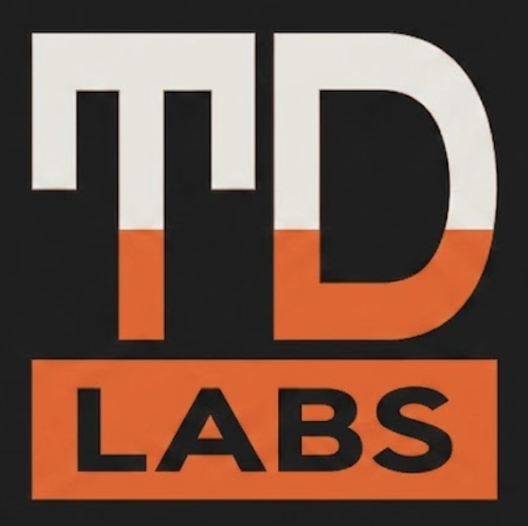

Team Dub LabsMost AI work today means shipping your business to someone else's server and renting back the answer.
We build the other kind. AI implementation, workflow automation and custom software that run on infrastructure you control, with data that doesn't leave, and no vendor who can reprice you at renewal.
Start a projectWhat we hold to
Local model inference where the work is sensitive. When a hosted API genuinely is the right call, we say so — and we draw the boundary explicitly rather than letting it blur.
Open formats, documented interfaces, and a handover that means you could replace us. If a system only works while we're paid, we built it wrong.
Anything we recommend is something we run ourselves, in production, where the failure modes are ours first.
What that means in practice
We work out what AI should actually do in your business, prove it on a narrow slice, and put it into production with guardrails and evaluation — on your infrastructure wherever the data warrants it.
The repetitive work that eats your week. Sometimes that needs AI. Often it just needs a well-built integration between four systems you already pay for. We'll tell you which — the honest answer is usually cheaper.
When the off-the-shelf tool doesn't fit and the workaround costs more than the licence. Built to your process, documented, and yours to keep running.
How we work
A paid discovery. We map the problem, the systems and the constraints, then tell you what's worth doing — including when the answer is "don't."
A working slice against your real data, in weeks rather than quarters. You watch it run before committing to a full build.
Into production, on infrastructure you control, with the documentation and handover that means you aren't dependent on us.
Who you're hiring
Team Dub Labs runs on the same things we sell. Our own operations sit on a self-hosted stack — local model inference, agent orchestration, an append-only audit trail — that we run in production every day, not as a demo.
That's the bar we work to: if we recommend something to you, we're already running it ourselves and we know where it breaks.
Writing
Beyond the Format: The Operational Layer OKF Leaves OutJun 2026More in progress.